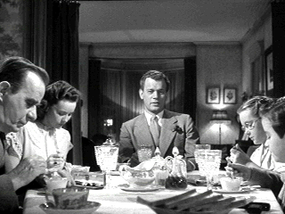
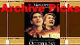

| Shadow of a Doubt (SE)/B+,B+ |
| Universal/1942/108/FS 1.33/BW |
There is no denying the devious
attraction of Shadow of a Doubt. Director Alfred Hitchcock delights in bringing a serial
killer into the heart of small town America. This devious conceit that must have tickled Hitchcock’s
perverse fancy. This is a very cold portrait, played very cool by the characters. There's something
quite uncomfortable about watching the action play out. The main relationships are somewhat
twisted, but then, one must suppose that is the genius of the script.
Shadow of a Doubt has never been one of my favorite Hitchcocks but
on this outing I enjoyed it more than ever before. It shares a similar problem with Hitchcock's
late career film Frenzy in that the central characters, Uncle Charlie in Shadow and
Blaney in Frenzy , are unsympathetic. Yes, one is a serial killer and one a “wrong man,”
but they are both the central focus of their respective films. Perhaps Shadow of a Doubt
falls short because the turnaround of young Charlie is too sudden, even too cynical. Where is the
innocence that must reside in small town America?
 |
| Uncle Charlie presides. ©Universal |
Life moves along at its own pace in
somewhat sleepy Santa Rosa, California.* Charlie, the oldest daughter in a wholesome Newton family,
is moping around complaining that nothing is happening and life is dull. She pines for the
stimulation of new blood. She decides to contact her Uncle Charlie. At the same time on the other
side of the country, Uncle Charlie makes his own plans to arrive in Santa Rosa. Something's in
synch between young Charlie and her namesake. Charlie arrives in Santa Rosa and what has been clear
in the Newton world becomes shadowed and the shadows reveal dark secrets. The FBI investigation is
simply plodding.
Joseph Cotton is such a hail good fellow presence on the screen. Uncle
Charlie reinforces the notion of a benign presence. Teresa Wright radiates sweetness that from the
screen that borders annoying. Yet, both she and Cotton share a chemistry bond in the screen
currency they have amasses as good souls. But below the surface, there's an edge of darkness to
Charlie's character, just a faint reflection of the distorted Uncle Charlie. The supporting cast is
a mixed bag. Macdonald Carey is far too stiff and artificial as FBI agent Jack Graham.
Henry Travers and Patricia Collinge are fine as Mom and Pop Newton. Hume Cronyn has some fun as the
eccentric neighbor who with Charlie's Dad dotes on murder and mayhem.
Happily, the source material for Shadow of a Doubt is in very
good shape. There are some minor evidences of dirt and scratches, but overall the clean DVD
transfer delivers the goods. Contrast is strong. Shadow detail is very good. The image is
consistently sharp with barely a breath of edge enhancement. Black are rich and uncompressed. The
music and dialogue are delivered distortion free. You'll be humming the Merry Widow Waltz yourself
by the end of this film.
Another compact and informative documentary accompanies Shadow of a Doubt.
A number of times it's mentioned that this is Alfred Hitchcock's favorite of all his films. Pat
Hitchcock, the director's daughter, speaks well and has a crystal clear memory. Robert Burke, the
assistant set designer shares his memories of the location shoot as well, but it is Teresa Wright's
comments that probably have the most resonance.
*Reader Richard Wagner noticed we used Santa Clara instead of Santa Rosa. Thanks, Richard.

October Sky/A,A
Johnston’s glorious montage work accompanied by Marc Isham's stunning Americana score are
reason enough for watching this exquisite movie.
Selections from the Feature Archive include articles on Akira Kurosawa, Frank Darabont, Blonde Bimbos, Hollywood Street Gangs, or Vietnam: The Hollywood Pariah, and many more....
Passing the Celluloid Baton

Sharing movie experiences from generation to generation is a precious gift. Click on the hands for a closer look.

|
Home Theater Talk
Cartoons |


Home Vision Cinema
Classic and foreign motion pictures on VHS tape. The title
selection is excellent and informative essays are provided for many of the films.
 Gary
Morris's insightful publication Bright Lights Film Journal turns the celluloid in films from
a unique perspective. Click on the image above for more pure movie views.
Gary
Morris's insightful publication Bright Lights Film Journal turns the celluloid in films from
a unique perspective. Click on the image above for more pure movie views.

Home of The American Film Institute.

The official site for information about the great comic director. A treat for connoisseurs of
classic Hollywood madcap.

The Movie Poster Archive includes extensive poster images from the films of stars like Susan Hayward, Kirk Douglas, Katharine Hepburn and many more. Our featured star is Humphrey Bogart.